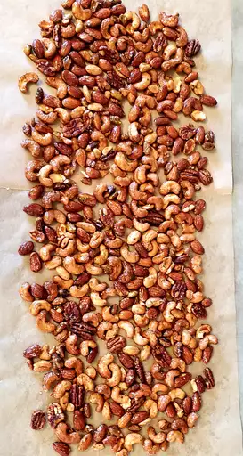

Sweet, Salty, Spicy Party Nuts

This spiced nuts recipe is made using a much easier technique than the stovetop pan method. You'll get beautiful, perfectly frosted nuts roasted evenly, with no bitter burned spots.
Ingredients
- cooking spray
- 1 cup untoasted walnut halves
- 1 cup untoasted pecan halves
- 1 cup unsalted, dry roasted almonds
- 1 cup unsalted, dry roasted cashews
- 1 teaspoon salt
- ½ teaspoon freshly ground black pepper
- ¼ teaspoon ground cumin
- ¼ teaspoon cayenne pepper
- ½ cup white sugar
- ¼ cup water
- 1 tablespoon butter
Steps
- Preheat the oven to 350 degrees F (175 degrees C). Line a baking sheet with aluminum foil and lightly coat with cooking spray.
- Combine walnuts, pecans, almonds, and cashews in a large bowl. Add salt, black pepper, cumin, and cayenne; toss to coat.
- Heat sugar, water, and butter in a small saucepan over medium heat. Cook until butter is melted and sugar is dissolved, about 1 minute. Slowly pour butter mixture over nuts and stir to coat.
- Transfer nuts to the prepared baking sheet and spread into a single layer.
- Bake nuts in the preheated oven for 10 minutes. Stir nuts to coat with warm syrup; spread out in a single layer. Return to the oven and bake until nuts are sticky and roasted, about 6 more minutes. Allow to cool before serving.